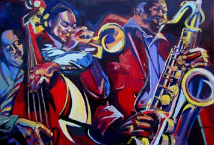

Главная страницаПрародитель всей современной музыкиСамые популярные жанры музыки |

Джаз - это волнующие ритмы, приятная живая музыка, которая непрерывно развивается и движется. С этим направлением, пожалуй, не сравнится ни одно другое, и перепутать его с каким-либо иным жанром невозможно. Лично для меня это направление выражает чувства, от безграничной радости, до слепой ярости.